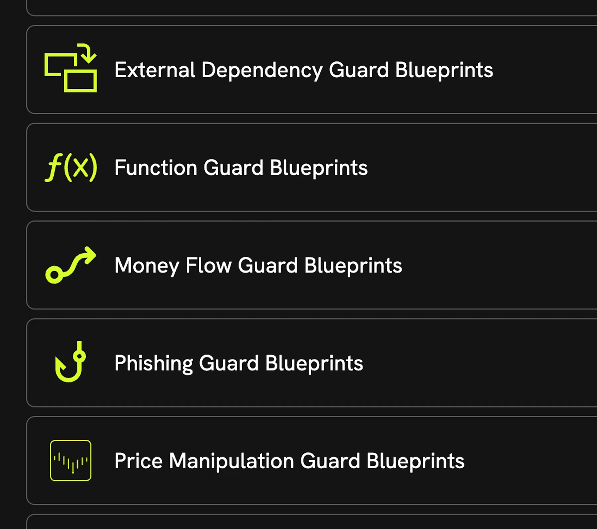
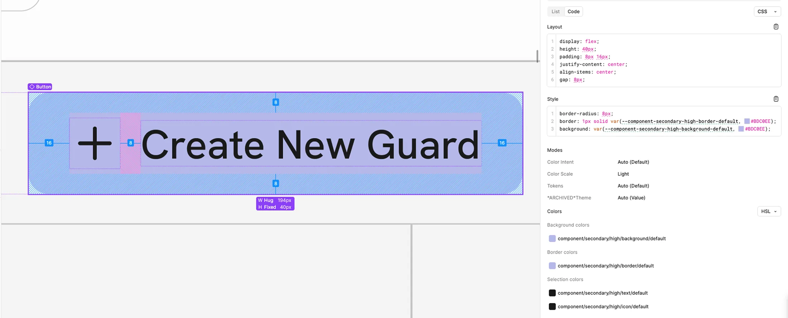
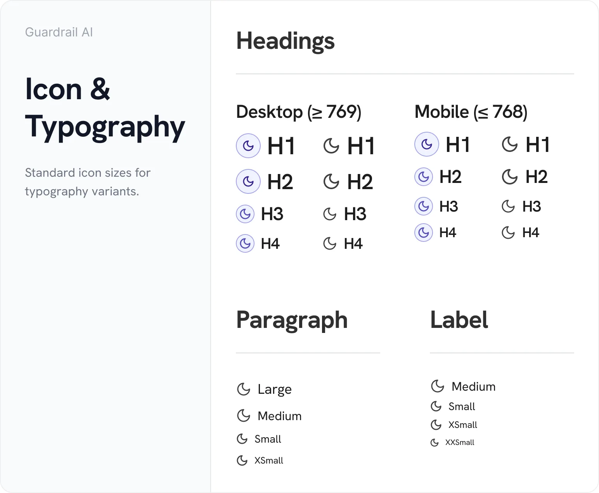

Raspberry AI: A New Way to Mask
Introduced a new interaction model that keeps fashion designers in context, speeding up their workflow.

Reduced developers’ custom styling by 90% and gave designers the foundation to expand the product.

The audit found three problems that looked separate:
All three came from decisions made per screen, not from a shared system. The fix had to serve two groups: responders triaging dense security data, and the designers and developers building a consistent product.
Working with Guardrail’s front-end developer, I layered semantic tokens on top of the palette. Each token is defined by five things: where it’s used, its intent, how much attention it draws, how it’s applied, and its state.
For example, component / secondary / high / background / default is the default background for a CTA in the secondary brand color, weighted to draw the eye first.
Designers wanted a quick color; developers needed each token to mean the same thing everywhere. I chose consistency over speed, so the system is slower to learn but much harder to misuse. Light and dark became one more axis of the taxonomy, and every value passes at least AA.
Responders needed every column of data; designers needed to build tables without starting over each time. I built a template from reusable components, putting critical information first, so dense rows stay scannable.
On smaller screens, I kept the table and added a list view for legibility. Breakpoints decide the default: table only above 768px, and a table/list toggle below that, defaulting to table from 640–768px and to list below 640px.



Components started from Shipfaster UI, adapted per client, then re-tokenized with Guardrail’s system.
One scale, two modes, holding proportions across design and development without anyone setting values by hand.

Typography and icon sizing guidelines, with icons from Lucide, keep text and icon usage consistent across screens.
The severity chip, alert notice, and outlined button now pass AAA in both light and dark mode.
Selected screens from across the product, before and after the redesign.


Guardrail’s front-end developer and I named the tokens together, so design and code shared one vocabulary and engineering could stop checking values. The system, redesign, and new features shipped before the acquisition.
The flagged components now pass AAA in both modes, and every other component passes at least AA. Over the next year, our design team used the system to create new features, with developers writing around 90% less custom styling. Post-acquisition, it evolved into the next step of Rain’s design system.
“I worked with Nicole during my time as the lead frontend developer at Guardrail. She was instrumental in the creation of Guardrail's design system, which has since been transformed into the next step of the evolution of Rain's design system. A faulty foundation is something I knew would hurt in the long run – working with Nicole and her team helped us build a system that we could rely on. With it, developers are writing around 90%(!) less custom styling than usual, enabling us to ship stuff speedily!”
Building on Shipfaster UI meant most of the three weeks went into re-tokenizing components one variable at a time. Next time I’d do fewer up front, letting later screens decide what else was needed. The taxonomy’s weight was the risk I watched: if designers had reached for raw palette values, my fallback was a short list of everyday tokens, with the full path saved for edge cases.
Introduced a new interaction model that keeps fashion designers in context, speeding up their workflow.

Unified fragmented tools into guided workflows, leading 68.5% of fashion designers who start one to generate.

Turned static signage into voice-guided way-finding, with tailored solutions across app and kiosk.